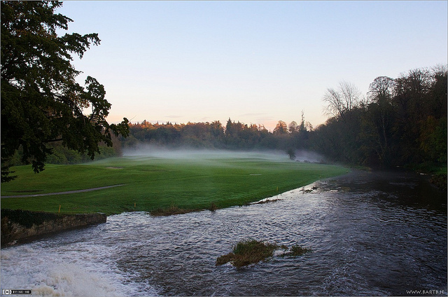

Because images are treated as inline blocks, you can use them to insert cute
little smilies right into your text

Below is an example of a larger image. This one uses a tooltip to specify some additional information about the image.

Find September 20, 2018 notes below.
for a link to another page include a hypertext reference known as href inside the anchor a tag. put the href in the opening tag because closing tags never get any attributes in them. Use the standard format name="value" i.e. href="url_to_jump_to"
to add a tooltip use the title attribute and to ask the browser to open the link in a new tab specify a target attribute and give it the value "_blank".
To use an anchor tag to mark a spot in the current page (known as a fragment) simply use the name="your_fragment" attribute. Elsewhere you can have another anchor which has an href="#your_fragment" attribute. Clicking this link will cause the page to jump to the spot you marked.